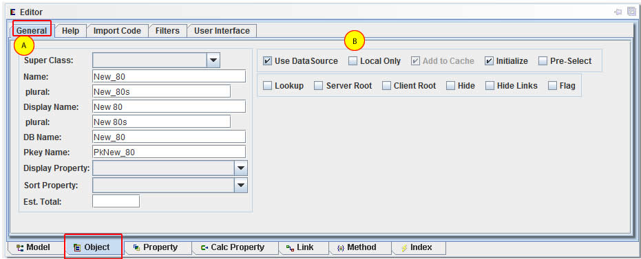

Under the General tab, fill out the following information.

Name - class name to create, must be a valid Java name. Use camel-case for multipart names. This will then update other settings to match.
Display name - to show in UI, etc.
Plural - name used for many of these objects.
DB Name - table name.
Pkey Name - name of DB table primary key.
Display Property - this can be set to any property (or calc property) that is the default display for this class.
Sort Property - name of property to sort by default. It can also be a property that is flagged as a sequence property, which will automatically be numbered in the order it was last sorted.
Est Total - estimated total amount of objects that will be created. This is for documentation only.
Use DataSource - check if this should also exist in the database.
Local Only - if true, then changes to this object will not be communicated to other servers.
Add to Cache - if this is a local only object, then it can be choosen to be excluded from the OAObjectCache.
Pre-Select - if true, then all objcts will be selected during program startup.
Lookup - true if this object is used for a drop down type of selection.
Server Root - if true then this the object will be selected from database and included in the ServerRoot as a reference. The ServerRoot object is a top level object that will be sent to client applications during startup. If checked, then an editor will be displayed to define the query to use.
ClientRoot - similar to the ServerRoot, but this object is unique for each client that connects to the server.
Hide - if checked then this object should be hidden when the Model's display settings is set to hide hidden objects.
Hide Links - if checked then this object's links should be hidden when the Model's display settings is set to hide hidden links.
Flag - if true, then this object can be color coded.